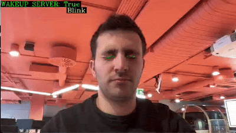
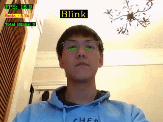
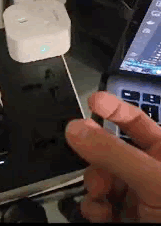
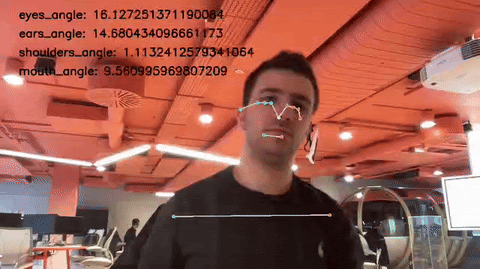
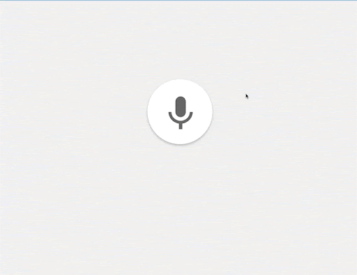

To demonstrate the capabilities of the WakeUp system, wedeveloped seven triggers in total. Each one detects movements or sounds made by patients and sends signals to the WakeUp system. Accompanying each trigger, there’s a text file for setting the trigger’s parameters, such as the degree of angle identified as falling.
Morse Vision

Based on the eye blinking detection trigger, this version distinguishes between long and short blinks, allowing for Morse code communication. While a bit more complex for patients to use, it enables the transmission of letter signals compared to simple blinking detection, which allows the user to use at least 27 different actions for a single trigger. For example, a nurse can set up for the letter T to turn on the TV.
Morse Sound
Functionally similar to Morse Vision, this trigger uses sound for Morse code communication. It detects long and short sounds made by the patient’s voice amplitude and converts them into a letter using Morse code, which are then sent as signals to the WakeUp System.
Eyes Blinking

This trigger detects eye blinking to monitor the patient’s eye movements through a webcam. It counts the number of eye blinks over a certain period, with the count serving as a signal in the Wakeup System. For example, this trigger can be used for turning on lights or opening curtains.
Audio Classification

This trigger identifies sounds such as clapping hands or coughing. It works by detecting these sounds repeatedly within a specified timeframe and then sending a signal to the WakeUp system. For example, the trigger can be configured to activate when it detects three consecutive claps, triggering activation of the plug.
This trigger identifies sounds such as clapping hands or coughing. It works by detecting these sounds repeatedly within a specified timeframe and then sending a signal to the WakeUp system. For example, the trigger can be configured to activate when it detects three consecutive claps, triggering activation of the plug.
Fall Detection (Upper Body)

This trigger detects if a patient is falling from a seated position by tracking upper body optimised with OpenVINO. A signal is generated if the patient’s body angle becomes too large, which can then prompt actions such as sending a message and photo to a nurse.
Custom Wordless as Triggers

This trigger focuses on live speech recognition, converting a patient’s owns speech into text for signal generation. Using simple repetitive sounds like “ah, ah, ah” or “oh, oh, oh” could send a signal to the WakeUp system.